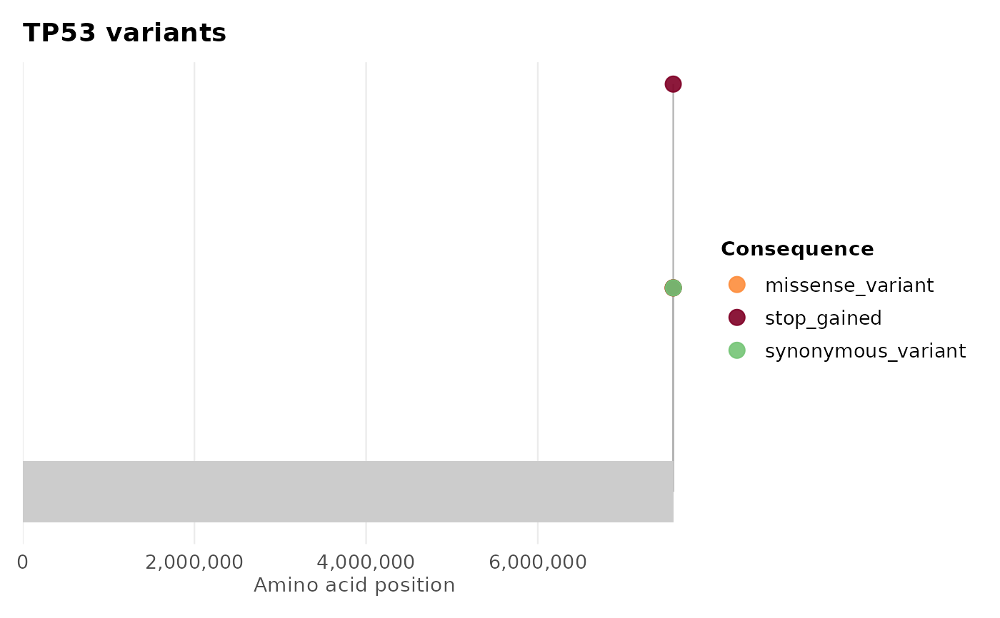
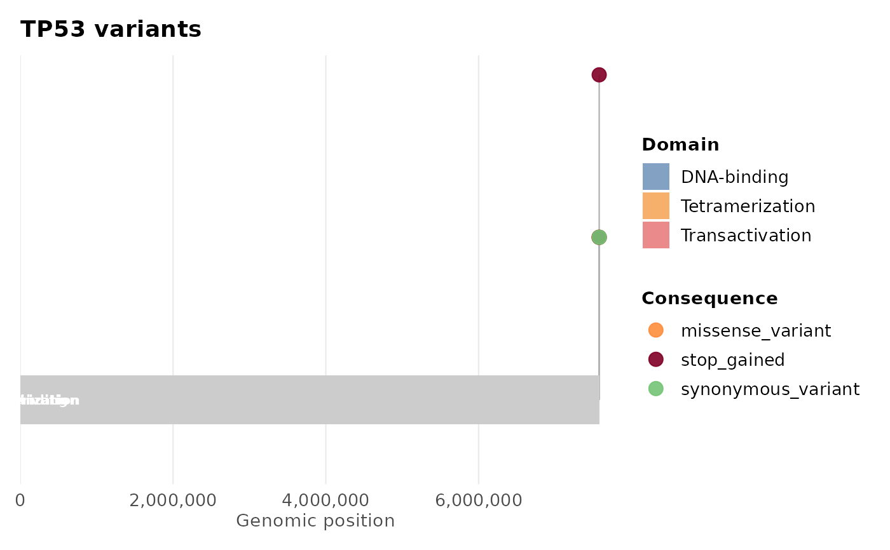

Draws a lollipop (stem-and-dot) diagram showing variant positions along a gene, coloured by consequence. Optionally overlays protein domain annotations when domain boundaries are supplied.
Usage
plot_lollipop(
variants,
gene = NULL,
domains = NULL,
color_by = "consequence",
palette = NULL,
protein_length = NULL,
stack_dots = TRUE,
title = NULL,
interactive = FALSE
)Arguments
- variants
A
gvfobject fromread_vcf()orcoerce_variants(), or anydata.framewith columnspos,consequence, and optionallygeneandsample.- gene
Character. Gene to filter on. If
NULLandvariantscontains agenecolumn, the most-mutated gene is chosen automatically.- domains
A
data.framewith columnsname,start,end(amino acid positions) for domain annotation.NULL(default) omits domains.- color_by
Column name to use for dot colour. Default
"consequence". Set to"sample"to colour by sample instead.- palette
Named character vector of colours for each consequence/sample category.
NULLuses the built-inggvariantpalette.- protein_length
Integer. Total length of the protein in amino acids, used to scale the x-axis. If
NULL(default), inferred frommax(pos)and the x-axis is labelled "Genomic position", sinceposis assumed to be a raw genomic coordinate. Supplyingprotein_lengthis taken as a signal thatposhas already been rescaled to protein coordinates (as in the@examplesbelow), and labels the x-axis "Amino acid position" instead.- stack_dots
Logical. If
TRUE(default), dots at the same position are stacked vertically (beeswarm-style) rather than overlapping.- title
Character. Plot title. Defaults to the gene name.
- interactive
Logical. If
TRUE, returns aplotlyinteractive plot (requires theplotlypackage).
Details
domains accepts any protein domain boundaries you supply. Pfam
(Paysan-Lafosse et al. 2025) is one source for real domain coordinates,
rather than typing them by hand as in the @examples below.
References
Paysan-Lafosse T, Andreeva A, Blum M, et al. (2025). The Pfam protein families database: embracing AI/ML. Nucleic Acids Research, 53(D1), D523-D534. doi:10.1093/nar/gkae997
See also
plot_consequence_summary(), plot_variant_spectrum(),
gv_palette()
Other ggvariant plots:
plot_consequence_summary(),
plot_oncoprint(),
plot_tmb(),
plot_variant_spectrum()
Examples
vcf_file <- system.file("extdata", "example.vcf", package = "ggvariant")
variants <- read_vcf(vcf_file)
#> ℹ Reading VCF: example.vcf
#> ✔ Reading VCF: example.vcf [15ms]
#>
#> Loaded 19 variant records across 7 chromosomes.
# Basic lollipop for the most-mutated gene
plot_lollipop(variants)
#> No gene specified; using most-mutated gene: "TP53"

# Specific gene
plot_lollipop(variants, gene = "TP53")
 # With domain annotation
tp53_domains <- data.frame(
name = c("Transactivation", "DNA-binding", "Tetramerization"),
start = c(1, 102, 323),
end = c(67, 292, 356)
)
plot_lollipop(variants, gene = "TP53", domains = tp53_domains)
# With domain annotation
tp53_domains <- data.frame(
name = c("Transactivation", "DNA-binding", "Tetramerization"),
start = c(1, 102, 323),
end = c(67, 292, 356)
)
plot_lollipop(variants, gene = "TP53", domains = tp53_domains)
